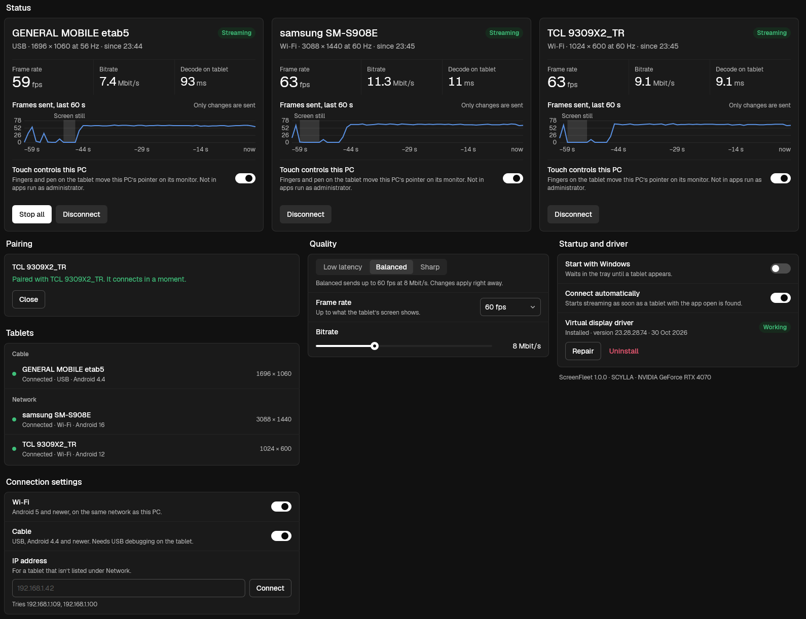
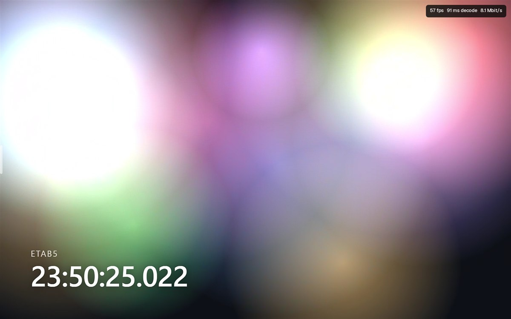
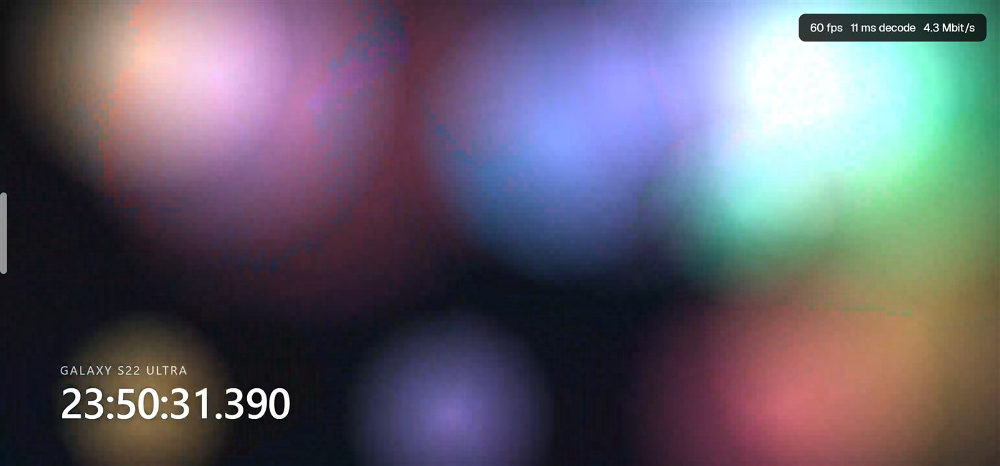
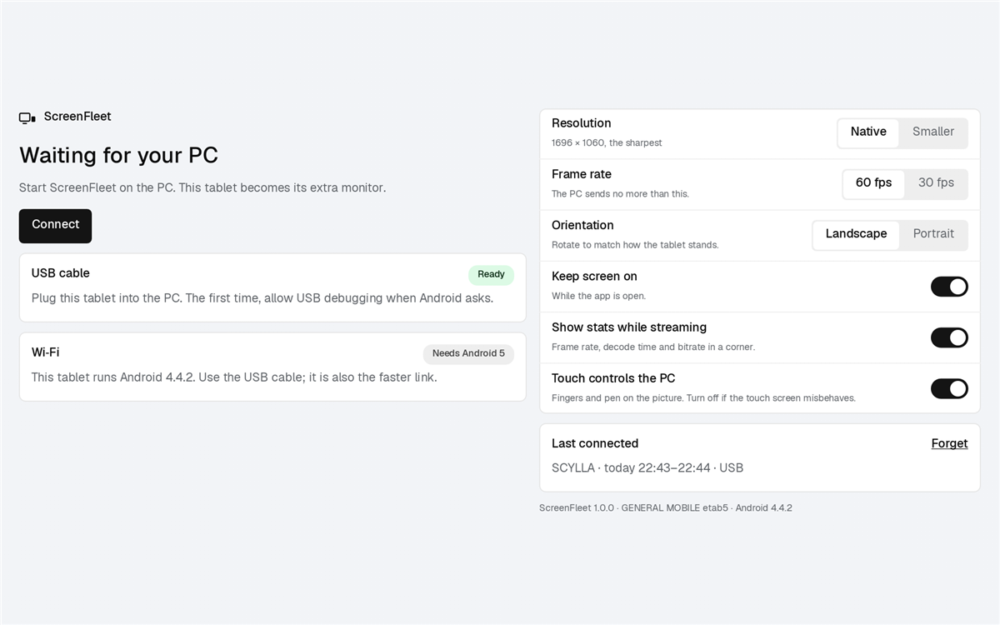

ScreenFleet turns the Android tablets and phones in your drawer into real extra monitors for Windows. Plug one in or pair it over Wi-Fi, and Windows gets a new display to drag windows onto — and touch. Connect several at once. No account, no cloud, no subscription.

A real session, not a mock-up: three devices streaming at once — an Android 4.4 tablet over USB and two Android 12/16 devices over Wi-Fi.
Each device gets its own display in Windows, at its native resolution, so you can place it left, right or above in Display settings — or duplicate a monitor onto it. Here is what the devices from the session above showed at the same moment.


The stats overlay in the corner is optional — turn on Show stats while streaming in the app to see frame rate, decode time and bitrate live.
Run the setup. It installs the app and a small virtual display driver — the part that lets Windows add a monitor. Windows asks for administrator rights once.
Copy the APK to the tablet or phone and open it (allow installing apps from that source once). Works on Android 4.4 and everything newer.
Open ScreenFleet on both. Then either:
A virtual display driver adds a true monitor for each device. Windows extends the desktop onto it — the taskbar, snapping and full-screen apps all just work.
Connect as many tablets and phones as you have, USB and Wi-Fi mixed. Each one gets its own monitor, status card and live graph.
Fingers and a stylus on the device control the PC on that monitor. Pens send hover, pressure, the barrel button and the eraser end.
The picture never leaves the graphics card on the PC: captured, scaled and encoded to H.264 in hardware (NVIDIA, AMD or Intel), then decoded in hardware on the device.
A still screen costs almost nothing; video and scrolling go up to 60 fps. Pick Low latency, Balanced or Sharp, or set the frame rate and bitrate yourself.
Android 4.4 from 2013 is supported, on purpose. That tablet too slow for anything else makes a perfectly good monitor for chat, docs or a dashboard.
There is no ScreenFleet server. The PC talks straight to the device over your cable or your own network, and that is the whole path.

Until the PC connects, the app shows what it is waiting for and what each connection needs. Once streaming, it is just your desktop, edge to edge — the menu hides behind a handle on the left edge.
Two small downloads: the PC setup and the Android app. Install the first on your PC and the second on every tablet or phone you want to use.
Windows 10 version 2004 or newer, or Windows 11, 64-bit. Uninstall from Settings › Apps; that removes the driver too.
SmartScreen may warn because the setup isn't signed with a paid certificate yet: choose More info, then Run anyway. For USB connections, also install Android platform-tools (adb); Wi-Fi needs nothing extra.
9e1867d8842e083c2624f6dc097936ddd4d6ed220c8dbe0488a3ae1ef85e5ea2Android 4.4 or newer, tablets and phones. Not on the Play Store yet — Android asks once to allow installing apps from your browser or file manager.
Or install it from the PC with adb install ScreenFleet-1.0.0.apk.
a3573fdb4aa1ed6228f4271b2f49d0c91f9052063889d7a1ad01158d64e7a2fbNot yet. The Windows host is done; a macOS host is planned. The Android app will work with both.
USB is the most stable and the only option on Android 4.4; it needs USB debugging on the device and adb on the PC. Wi-Fi (Android 5+) needs no cable and no extra software; on a good network it reaches 60 fps too.
Yes — in Windows Display settings, choose to duplicate a monitor onto the device's display.
Windows only loads signed drivers. Instead of shipping one shared signing key, Setup signs the driver on your PC with a brand-new certificate and deletes its private key straight away, so it can't be used to sign anything else. The certificate is trusted only on that PC and removed when you uninstall.
Windows 10 2004 or newer (64-bit) and a GPU with a hardware H.264 encoder — practically any NVIDIA, AMD or Intel graphics from the last decade.
C++ on Windows, Java on Android, a documented wire protocol in between. MIT-licensed — issues and pull requests welcome.